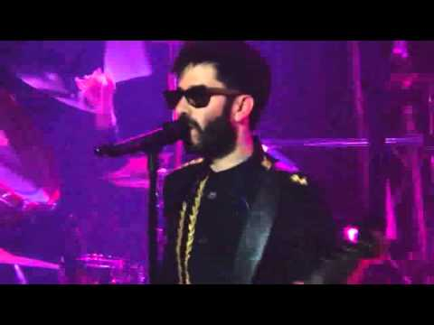

Το συγκρότημα αποτελείται από τους :
Χρήστος Μάστορας (φωνητικά)

Κώστας Μαυρογέννης (μπάσο)
Θάνος Λάιτσας (κιθάρα)
Σπύρος Κουδούνης (τύμπανα)
Παντελής Κυραμαργιός (κιμπορντίστας) ο οποίος ομως ανακοίνωσε πως αποχωρεί για προσωπικούς λόγους απο το συγκρότημα.
Μικρές Ιστορίες : Το συγκρότημα Melisses δημιουργήθηκε το Μάιο του 2008, με τον Χρήστο στο τραγούδι, τον Ιάκωβο στα ντραμς, τον Θάνο στην κιθάρα και τον Κώστα στο μπάσο. Αρχικά έπαιζαν live σε μουσικές σκηνές, μέχρι που στην παρέα τους ήρθε και ο Παντελής. Κάπου εκεί δημιουργήθηκε και το όνομα "Melisses", ενώ σιγά σιγά ξεκίνησαν να γράφουν και τα πρώτα τους τραγούδια, όπως το "Κρυφά" και το "Μυστικό". Μετά την πρώτη τους εμφάνιση σαν ολοκληρωμένο συγκρότημα στο "Mad Day Live", ακολούθησε και η συνεργασία τους με τη Universal Music. Πρώτο Τραγούδι τους ηταν το "Κρυφά" και στα σημαντικά είναι το γεγονός ότι το τραγούδι παρέμεινε στο top 10 του ελληνικού ραδιοφώνου για 3 μήνες. Επίσης, Το 2010 έλαβαν το βραβείο Καλύτερου Πρωτοεμφανιζόμενου Καλλιτέχνη στα Mad Video Music Awards Το 2012 ο δεύτερος δίσκος τους "ΑΚΟΥ" βραβεύτηκε με χρυσό δίσκο. Το 2014 μετακόμισαν από την Cobalt Music στην Panik Records.